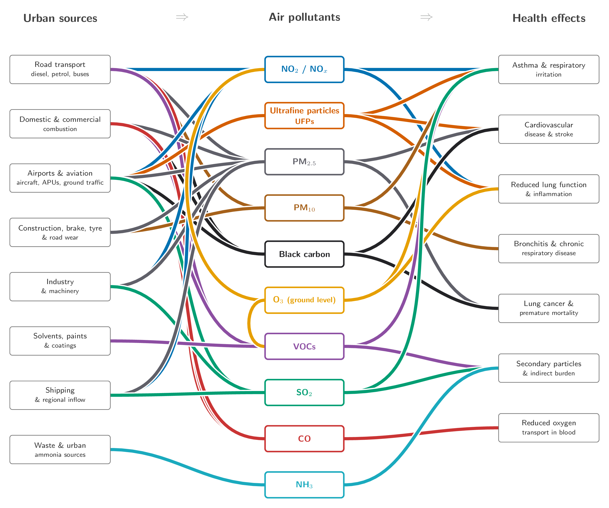

ldn/index.md
10:00 - 12:00, Monday 6 July at London City Hall
This event is part of London Data Week 2026, a public citywide data festival. To learn more or please visit londondataweek.org.
We are very grateful to the London City Hall for hosting this evening and their hospitality.
| Date | Monday, 6 July 2026 |
|---|---|
| Time | 10:00 - 12:00 |
| Location | London City Hall, Kamal Chunchie Way, London E16 1ZE, UK |
| Event page | https://luma.com/3cq829o7 |
This hands-on, collaborative workshop invites Londoners to step into the role of urban data analysts to examine the city’s air quality. Utilising open-access datasets from the London Air Quality Network (LAQN) and local monitoring centres, participants will map pollution hotspots, trace historical trends across different boroughs and investigate the micro-effects of local traffic and green infrastructure.
The event acts as a bridge between hard environmental science and local community experience. Participants will work in small teams to look at the data, draw insights about their own neighbourhoods, and collaboratively draft data-driven recommendations for cleaner borough streets. Rather than viewing air pollution solely as an environmental problem, the workshop introduces participants to the idea that air quality is an emergent property of London’s wider urban system. Participants will be encouraged to consider how infrastructure investment, transport planning, and urban design can contribute to healthier and more liveable communities.

colab.research.google.com/drive/1On4wfqxvFduKTYHHoyCWIPxo7JZ1Iiku?usp=sharing
https://colab.research.google.com/drive/1On4wfqxvFduKTYHHoyCWIPxo7JZ1Iiku?usp=sharing